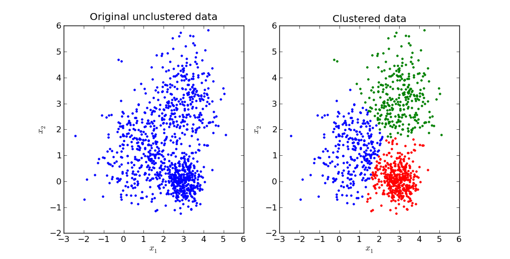

ML
Tipos de Sistemas
Por nivel de supervisión

Con Respuestas - Sin Respuestas - Castigo
Labels - No Labels - Reward
Supervisado
Respuestas
Refuerzo
"Tabla", "Frio o Caliente"
Refuerzo positivo y refuerzo negativo
No Supervisado
Sin Respuestas
No Supervisado
Sin Respuestas
El gato aprende solo a tumbar cosas
| Supervisado | Respuestas | |
| Refuerzo | "Tabla" , "Frio o Caliente" | |
| No Supervisado | Sin Respuestas |
Aprendizaje Supervisado
Aprendizaje Supervisado

Aprendizaje Supervisado

Aprendizaje Supervisado
Aprendizaje Supervisado
Aprendizaje Supervisado

Generaliza (Nuevos Correos)
Aprendizaje Supervisado
Clasificación Vs Regresión
Aprendizaje Supervisado
Clasificación
Valores discretos - Categorías (1,0)
Regresión
Valores continuos - Número
Aprendizaje Supervisado
¿Otros Ejemplos?
Aprendizaje Supervisado
| Ejemplos | Con respuestas: Entradas y Salidas |
| Entradas | Características, Variables Independientes, $X$ |
| Salidas | Etiquetas o Valores, Variable Dependiente, $Y$ |
| Modelo | $f(X) = Y'$ |
| Error | Error $\propto |Y - Y'|$, Distancia |
Ejemplo características para predicción del tipo de carro
¿Cuales son las Características y Etiquetas de los ejemplos anteriores?
Aprendizaje No Supervisado

Aprendizaje No Supervisado
Agrupamiento - Clustering
Visualización - Visualization
Reducción de Dimensionalidad - Dimensionality Reduction
Reglas de asociación - Association rule learning
Aprendizaje No Supervisado
Agrupamiento
Aprendizaje No Supervisado
Agrupamiento
Aprendizaje No Supervisado
Visualización y Reducción Dimensionalidad
Aprendizaje No Supervisado
Visualización y Reducción Dimensionalidad

Aprendizaje No Supervisado
Reglas Asociación

Aprendizaje No Supervisado
| Ejemplos | Entradas, sin etiquetas |
| Entradas | Características, $X$ |
| Modelo | |
| Error | Error Clustering: $\propto |X1 - X2|$, Distancia (intra-inter) grupos |
Aprendizaje semi-Supervisado
Pocos ejemplos con etiquetas
Muchos ejemplos sin etiquetas
Aprendizaje por Refuerzo
De los ejemplos que cada uno trajo, ¿Como se clasifica cada uno?
Por "frecuencia" aprendizaje
Batch Learning - Offline learning
Ejemplos completos
Muchos recursos(Memoria, CPU)
Se reentrena
Online Learning
Incremental
Cada ejemplo al vuelo
Se puede prender o apagar el aprendizaje
Por forma de generalización
Basado en Instancias
Use los similares a los ejemplos
Ejemplos + Medida Similaridad
Basado en Modelos
Construir modelo de los ejemplos
Función de Costo
Términos clave
¿Qué es? Ejemplos
Etiqueta - Label $y$
Característica - Features $x$
Ejemplo - Examples $(x,y)$
¿Qué es? Ejemplos
Modelo - Model $f(x)$
Inferencia - Inference $f(x)=y'$
Entrenamiento - Training $min(Error)$
$ \min_{\forall ej.} \sum{|y-y'|}$